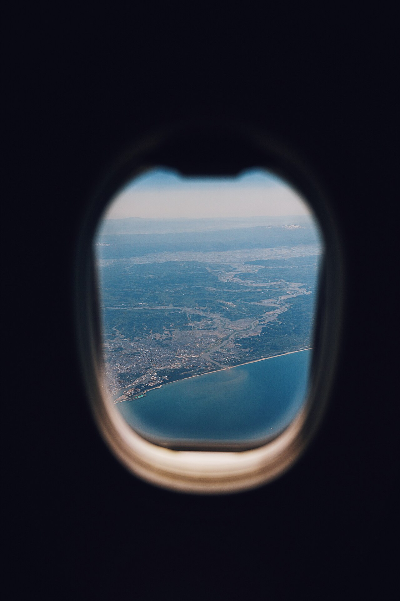
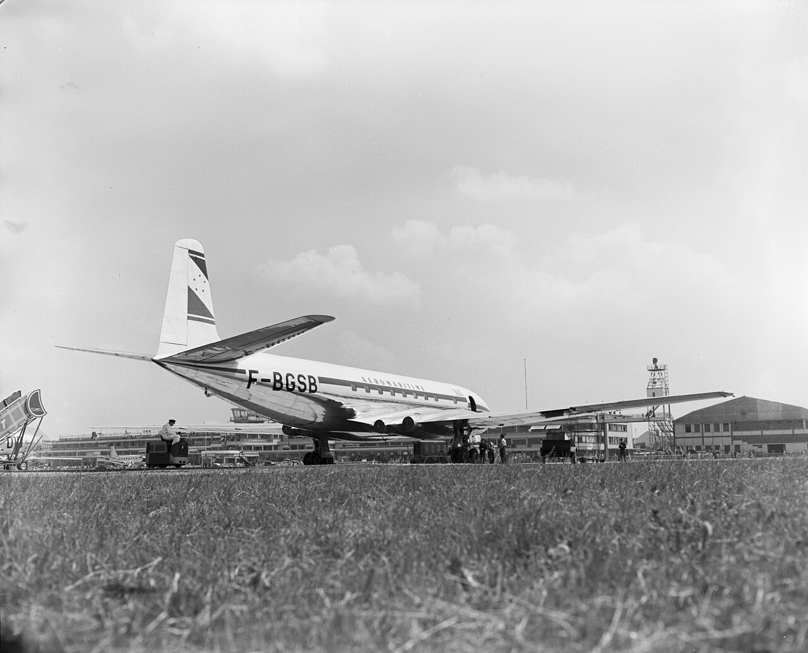
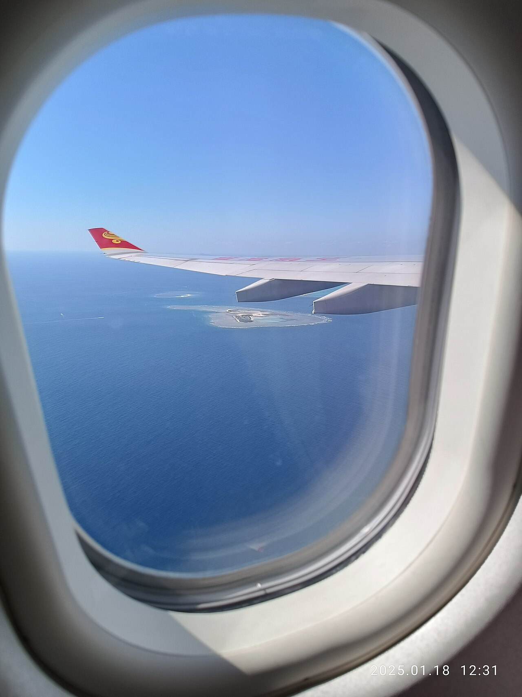
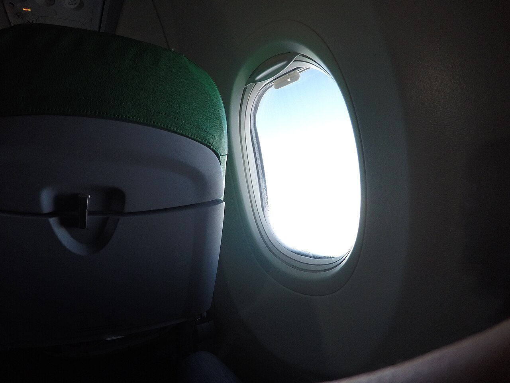
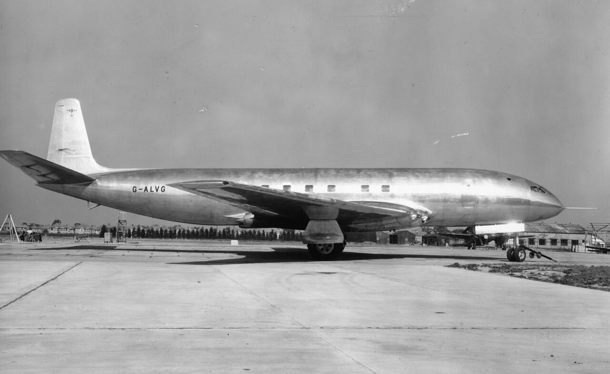
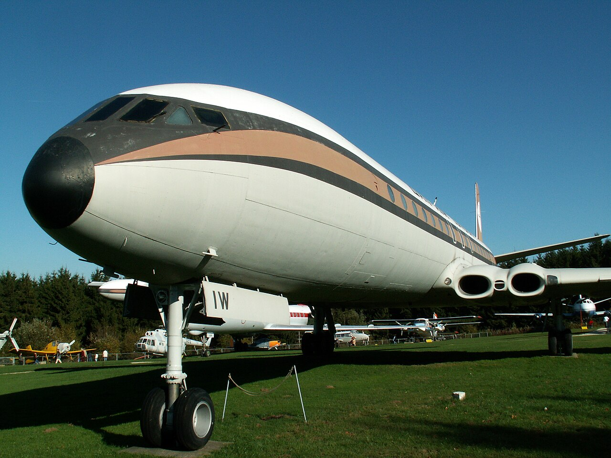
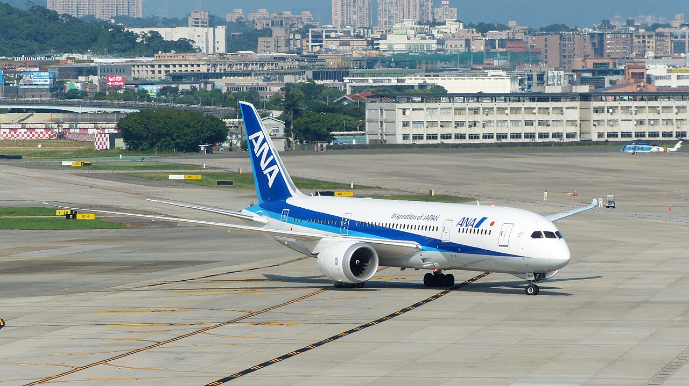

技術・発明 Technology飛行機の窓は、 なぜ丸い？ 旅客機の窓には、とがった角がありません。高い空で胴体にかかる力を気圧の図で、穴の角に力が集まるしくみを力の流れの図で、世界初のジェット旅客機の事故調査を年表で見ていきます。四角い窓では、なぜいけないのでしょう？
2026.11.02 UP 約5分で読める 文：SOMOSOMO編集部
写真：Air plane window／Suhyeon Choi（2017年、CC0）
ロンドン、1952年5月2日。ヒースロー空港から、銀色の旅客機が南アフリカのヨハネスブルクへ飛び立ちました。イギリスのデハビランド社が作った「コメット」。乗客を乗せて飛ぶ、世界で初めてのジェット旅客機の定期便でした。
ところが2年後、コメットは相次ぐ事故で空から姿を消します。その原因を探った調査が、のちの旅客機の形を変えました。いま私たちが乗る飛行機の窓は、どれも角のない、丸みをおびた形をしています。四角い窓では、なぜいけないのでしょうか。

世界初のジェット旅客機、コメット 1953年のパリ航空ショーに並んだコメット1A。エンジンは主翼の付け根に埋めこまれ、胴体の横には小さな窓が一列に並んでいます。写真：Paris International Air Show 1953 ／アメリカ政府（アメリカ国立公文書館所蔵、1953年、パブリックドメイン）
In a word
力が角に集まらない ようにするためだ。
01
The Pressure Inside
飛行機の胴体は、 飛ぶたびに ふくらむ
旅客機が飛ぶ高度約1万mでは、空気がとてもうすく、気圧（空気が押す力）は地上の約4分の1しかありません。そのままでは、息をしても十分な酸素を取りこめず、人は短い時間で意識を失ってしまいます。
そこで旅客機は、外から取りこんだ空気を圧縮して機内に送り、気圧を高く保っています。これを「与圧」といいます。アメリカの基準では、ふつうに飛んでいるときの機内の気圧は、高度約2,400m（8,000フィート）の気圧を下回ってはいけないと決められています。
機内の空気は外よりずっと濃いので、胴体を内側から外へ押します。着陸に向けて降りてくると、この力は消えます。つまり胴体は、1回飛ぶたびに1回、風船のようにわずかにふくらんでは戻っているのです。目には見えないほどの変化ですが、それが何千回、何万回とくり返されます。
Fig.01 機内と外の 気圧の差が、 胴体を押す
気圧のくらべ（地上を100とする）
地上
機内の空気
高度1万m
100
約74
約26
機内は、高度約2,400m相当の気圧に保たれる
機内
外の空気はうすい
機内の空気が胴体を
内側から外へ押す
点線：ふくらんだ胴体
降りると元に戻る。
これを飛ぶたびにくり返す
胴体の断面（模式図。ふくらみは大げさに描いた）
見どころは、上の赤い棒と白い棒の差。高度1万mでは、機内の空気が外の約3倍の気圧で胴体を押しています（国際標準大気から計算した目安）。

窓の外は、空気のうすい世界 上空を飛ぶ旅客機の窓から見た主翼と海。窓は縦に長く、どこにもとがった角がありません。この1枚の向こうとこちらで、気圧が大きくちがいます。写真：HongKong Airlines window view sky from Naha Airport to HKIA ／Naha Mama Pavilionz（2025年、CC0）
02
Stress Concentration
力は、 穴の角に 集まる
胴体の外板（外側をおおう金属の板）は、ふくらむたびに引っぱられます。板がひと続きなら、引っぱる力は板全体に均等に広がります。ところが窓やドアのために穴をあけると、力は穴をよけて回りこむしかありません。
回りこんだ力は、穴のふちに集まります。これを「応力集中」といいます。材料力学（物の強さを調べる学問）の計算では、大きな板を一方向に引っぱったとき、丸い穴のふちには、まわりの約3倍の力がかかります。
四角い穴だと、事態はもっと深刻です。力は角で急に向きを変えなければならず、そこに集中します。角が鋭いほど、集中は何倍にもはね上がります。逆に角を大きく丸め、曲がり方をゆるやかにすれば、力はなめらかに流れます。
一度なら耐えられる力でも、何千回もくり返しかかると、金属には目に見えない割れ目ができ、少しずつ伸びていきます。針金を何度も折り曲げると切れるのと同じしくみで、「金属疲労」と呼ばれます。割れ目が生まれるのは、力が集まる場所です。
Fig.02 四角い穴と 丸い穴の、 力の流れ
四角い穴
丸い穴
角に力が集中
角が鋭いほど大きい
なめらかに回りこむ
最大でも約3倍
板を上下に引っぱったときの力の流れ（模式図）
見どころは、左の4つの角の赤い点。穴をよけた力の線が角のそばに押しこまれ、そこだけ力が強くなります。右の丸い穴では、線がゆるやかに曲がって回りこみます（模式図）。

窓のふちは、ゆるやかな曲線 座席の横の窓（写真はイメージです）。上下も左右も、ふちはなめらかにつながっています。力の線が急に曲がる場所を、窓の形からなくしているのです。写真：Plane Window (Unsplash) ／Angelo Abear（2017年、CC0）
03
The Water Tank Test
コメットの胴体は、 水槽の中で 裂けた
1954年1月10日、ローマを飛び立ったBOAC（英国海外航空）781便のコメットが、イタリアのエルバ島の沖で空中で壊れ、乗っていた35人全員が亡くなりました。4月8日には、ローマからカイロへ向かった南アフリカ航空201便のコメットも地中海に落ち、21人全員が犠牲になりました。
コメットはすべて飛ぶのを止められ、イギリスの王立航空研究所が原因を調べました。研究所は1機をまるごと大きな水槽に沈め、胴体に水を満たして圧力をかけては抜く試験を、昼も夜もくり返しました。何年分もの飛行を、地上で早回しにしたのです。
1954年6月24日、試験の機体の胴体が裂けました。それまでの実際の飛行とあわせて3,057回目。割れ目は、非常口の四角い開口部の角の近くにある、ボルトの穴から始まっていました。
海から引き上げた781便の機体を調べても、割れ目は胴体の屋根にあった小さな四角い窓の角の近く、リベット（板を留める鋲）の穴から始まっていました。方向探知機のアンテナのための窓です。1955年2月に公表された報告書は、くり返す与圧による金属疲労が原因だと結論づけました。
Fig.03 コメットから、 いまの旅客機へ
1949.07 コメットが初飛行
1952.05 世界初のジェット旅客機の定期便
1954.01 781便がエルバ島沖で事故
1954.04 201便が事故。全機が飛行停止
1954.06 水槽の試験で、胴体が裂ける
1955.02 報告書。原因は金属疲労
1958.10 楕円の窓のコメット4が大西洋へ
2011.10 複合材の胴体のボーイング787が就航
年と月。出来事は出典の資料による
見どころは、赤い1954年6月。2度目の事故から3か月足らずで、地上の水槽が割れ目の始まる場所を示しました。
その後のコメットは、外板を厚くし、窓や開口部を作り直しました。客室の窓は楕円形に改められ、1958年に大西洋横断の定期便を始めたコメット4も、楕円の窓を並べて飛びました。


窓の形を、くらべてみる 左は、1949年に撮られたコメットの試作機。胴体の窓は小さく、四角に近い形です。右は、ドイツのヘルメスカイルの航空機展示に置かれたコメット4C。茶色の帯の中に、楕円の窓が並んでいます。写真：左 Comet Prototype at Hatfield ／イギリス政府（1949年、パブリックドメイン）、右 De Havilland Comet, Dan-Air London, photo-2 ／Alf van Beem（2005年、CC0）
04
Windows Today
いまの窓は、 3枚重ねで 小さな穴がある
いまの旅客機の客室の窓は、ふつう3枚の透明な板を重ねてできています。いちばん外の板が機内の気圧を受けとめ、まん中の板は外の板が割れたときの予備です。いちばん内側の板は、乗客の手や傷から窓を守るためのものです。
まん中の板の下のほうには、小さな穴が1つあいています。「ブリードホール」と呼ばれる空気の通り道で、外の板とまん中の板のすきまを、機内と同じ気圧にします。こうして、ふだんは外の板だけが力を受け、まん中の板は予備として力を残しておけます。くもりを防ぐ役目もあります。
2011年に就航したボーイング787は、胴体の大部分を金属ではなく複合材（炭素の繊維を樹脂で固めた材料）で作りました。複合材の胴体では、大がかりな補強なしで窓を大きくできたとされます。金属疲労の心配が小さいぶん、機内の気圧も高度約1,800m相当と高めに保っています。

複合材の胴体の、ボーイング787 台北の松山空港の誘導路を走る787。胴体の大部分が複合材でできていて、客室の窓はほかの旅客機よりひとまわり大きく作られています。写真：ANA Boeing 787-8 JA832A Taxiing at Taipei Songshan Airport ／玄史生（2016年、CC0）
05
By the Numbers
数字で見る、飛行機の窓
約 5t 高度1万mで機内を高度約2,400m相当に保つとき、胴体の内側1m²が外へ押される力。重さ1トンの車5台分に当たる国際標準大気から計算
1290回 781便のコメットが、事故までに重ねた与圧した飛行の回数。就航から2年たらずのことだったWikipedia 英語版
約 47cm ボーイング787の客室の窓の縦の長さ（横は約27cm）。A4の紙の長い辺の約1.6倍Wikipedia 英語版
Here's the Fun Part
ここが面白い！コメットの 客室の窓は、 もともと 角が丸かった
コメットの事故は、「四角い客室の窓のせいで起きた」と語られることがよくあります。でも、割れ目が始まったのは、屋根のアンテナ用の窓と非常口の角でした。そして客室の窓も、正確には真四角ではなく、角をわずかに丸めた四角 でした。
同じような形の窓は、当時のプロペラ旅客機にもありました。そちらで問題が起きなかったのは、低い空を飛ぶので、機内と外の気圧の差がずっと小さかったためと考えられています。コメットのあとに楕円の窓へ変えた理由についても、窓を接着で留めやすくするためだった、と見る研究者もいます。
実際、そのあとのボーイング707などの窓は、楕円ではなく角を大きく丸めた四角 になりました。大事なのは「丸」そのものより、角の丸みを大きくして、力の曲がり方をゆるやかにすること。飛行機の窓は、「穴の角に力が集まる」という教訓を形にしたものなのです。
次に飛行機に乗ったら、窓だけでなく、乗りこむドアの角も見てみてください。そこもきっと、ゆるやかな丸みをおびているはずです。
出典・参考
de Havilland Comet （Wikipedia 英語版）：1949年7月27日初飛行、1952年5月2日に世界初のジェット旅客機の定期便（ロンドン〜ヨハネスブルク）、水槽試験の機体 G-ALYU が1954年6月24日に3,057回（実際の飛行1,221回＋試験1,836回）で非常口の開口部の角近くのボルト穴から裂けたこと、781便の機体 G-ALYP の割れ目が屋根の ADF（自動方向探知機）アンテナ用の窓の角近くのリベット穴から始まったこと（「窓」はこのアンテナ用の開口部を指すこと）、G-ALYP が事故前に1,290回の与圧飛行をしていたこと、外板を厚くし窓と開口部を作り直したこと、コメット2・3と1XB で楕円の窓に改めたこと、客室の窓は角を丸めた四角で破壊の起点ではなかったこと、プロペラ機は気圧の差が小さかったこと、楕円にしたのは接着しやすくするためだったとする Paul Withey の見方、ボーイング707などは角を丸めた四角の窓になったこと、コメット4が1958年10月4日に大西洋横断の定期便を始めたことBOAC Flight 781 （Wikipedia 英語版）：1954年1月10日、ローマ出発後にエルバ島沖で空中分解、35人全員死亡、くり返す与圧による金属疲労とした調査の結論、報告書の公表は1955年2月1日、水槽での試験South African Airways Flight 201 （Wikipedia 英語版）：1954年4月8日、ローマ〜カイロ間で地中海に墜落、21人全員死亡Stress concentration （Wikipedia 英語版）：大きな板の円い穴の応力集中係数は3、曲率半径が小さい（角が鋭い）ほど最大の応力が大きくなること（Inglis の式）、角を丸めて集中を減らすこと14 CFR 25.841 Pressurized cabins （アメリカ連邦規則）：ふつうの運航では機内の気圧高度を8,000フィート以下に保つことBarometric formula （Wikipedia 英語版）：国際標準大気の気圧。本文と図の値（地上101.3kPa、高度約2,400m で約75kPa、高度1万m で約26kPa）と、1m²あたりの力（約49kPa ≒ 約5トン重）はこの式から計算したWhy Is There a Hole in Airplane Windows? （Gizmodo、2015年5月11日。GKN Aerospace の技術責任者への取材とボーイング737の整備マニュアルによる）：窓は外・まん中・内側の3枚で、外の板が気圧を受け、まん中の板は予備、内側は傷よけの板。まん中の板の穴（ブリーザーホール）で気圧をそろえること、くもりや霜を防ぐ工夫Boeing 787 Dreamliner （Wikipedia 英語版）：複合材の胴体、客室の窓は10.7×18.4インチ（約27×47cm）で、複合材の胴体により構造の補強なしで大きくできたこと、機内の気圧は高度6,000フィート（約1,800m）相当で、従来機は8,000フィート、複合材の胴体は高い機内気圧での金属疲労の問題を避けられること、2011年10月の就航写真：すべて CC0 またはパブリックドメイン。クレジットはそれぞれの写真の下に記しています。扉：Air plane window (Unsplash) ／Suhyeon Choi（2017年、CC0）